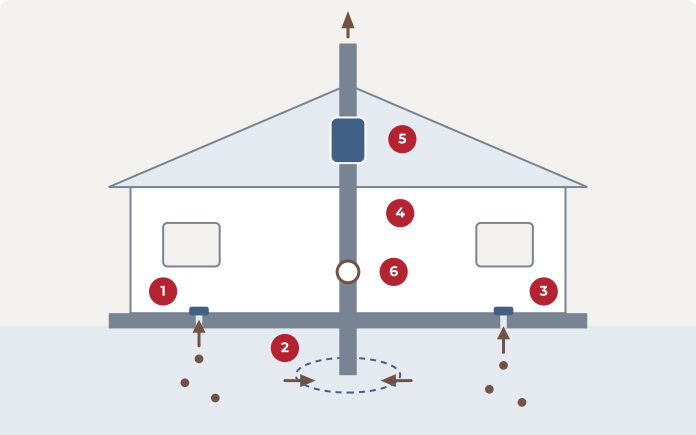

How it works
How radon mitigation works
A homeowner's quick guide to how an active system reduces radon in your home.

Pulling radon out from under your home
Radon is a gas that moves up from the soil and enters through slab cracks and openings. An active system gives it a safer path: a fan creates suction under the slab and vents the gas above the roof, away from where you live.
The numbers on the diagram match the six steps below.
The six steps
-
Locate radon entry points
We find where radon is getting in, such as slab cracks, sumps and utility openings.
-
Install the suction point
A small opening is made in the slab, or a membrane is laid in a crawl space, so the system can draw air from beneath your home.
-
Seal cracks and openings
Visible cracks and gaps are sealed so the system pulls from the soil instead of from your living space.
-
Run sealed PVC piping
Sealed PVC pipe carries the gas up and out of the home, ending above the roofline.
-
Mount the inline fan
An inline suction fan in the vertical run keeps low pressure under the home. It sits outside or in the attic, never in living space.
-
Test and monitor
We confirm the system is venting properly. The EPA recommends retesting at least every two years.
Common questions
Does the system run all the time?
Yes. The fan runs continuously so the pressure under your home stays low. It uses a small amount of power.
Where does the fan go?
Outside the home or in the attic, never in the basement, crawl space or living areas.
How do I know it is working?
Most systems include a gauge or monitor on the pipe that shows whether the fan is running. A follow-up radon test confirms the result.
When should I retest?
The EPA recommends retesting at least every two years, and after any major renovation.